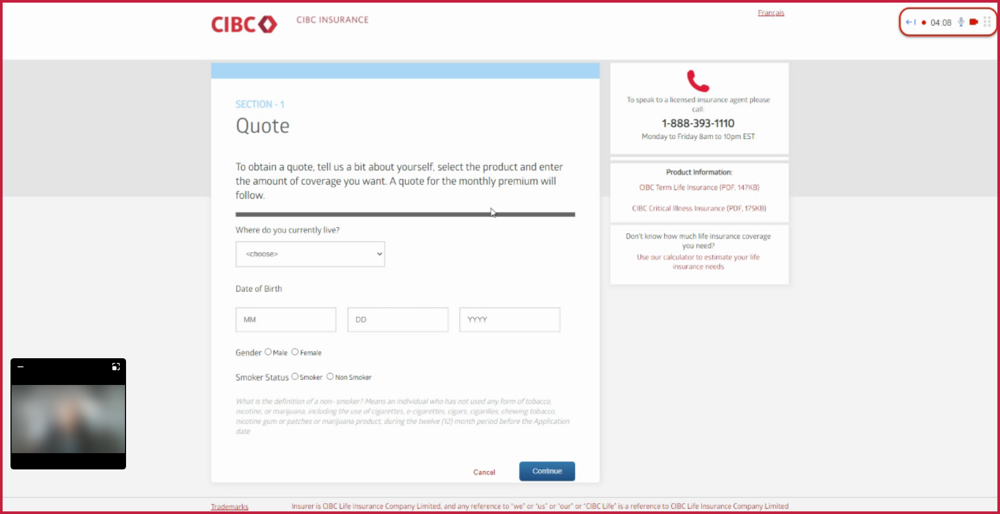

role: lead researcher in a team of 2 designers, 1 strategist, and 1 project manager
methods: Surveys, A/B Testing, Unmoderated usability testing
software: Feedback Loop, UserTesting, Figma
timeline: February - June 2022
Partnering with CIBC's life insurance business, my focus was on optimizing the end-to-end life insurance policy buying experience, and I spearheaded the effort by developing the research plan, executing research methodologies, and synthesizing findings into a report tailored to executive audiences. Collaborating with cross-functional stakeholders, from product to legal, I co-created innovative solutions using insights from market research, user research, and design thinking workshops. My efforts culminated in pitching findings to high-level stakeholders, ranging from Vice Presidents to C-suite, that resulted in driving strategic business decisions.
Overall, two surveys, and 2 rounds of usability tests were conducted over a 4 month period.
The User Experience Research plan for this engagement revolved around 3 key milestones:
Getting a general view of Canadians’ perspective about life insurance.
Evaluate the current state CIBC experience of searching for life insurance, navigating the website, and obtaining a quote.
Compare the proposed experience with the current experience based on usability, support, and likelihood to apply for a quote.
When the Life Insurance team came to us, they didn’t have any artifacts for us to reference in regards to the target segment for the business. As such, a key outcome of this engagement was to create foundational artifacts for the Life Insurance business, such as personas and journey maps.
Reach a large audience quickly to inform persona creation, focusing on communication preferences, experience expectations, and overall perceptions of life insurance.
Overall, we learned that Canadians feel they are somewhat confident with their life insurance knowledge. They think the most important information to know is the specific benefits they can realize if they were to get a life insurance policy.
Most preferred format for education about life insurance is through online articles or videos where they can learn at their own pace.
total survey participants
recruitment criteria
If I were to do this research over again, I would incorporate a segmentation question to filter survey responses depending on if they currently do or do not have a life insurance policy.
Based on the findings from the survey, I identified guiding principles for the team to ground ourselves in as we worked towards designing the ideal future state. Additionally, I used these key learnings to begin informing the usability testing plan to validate the accuracy of these findings.
Timely communication that clearly outlines next steps and expectations for prospective life insurance buyers.
Empower clients with educational resources so that they can make informed decisions.
Emphasize the specific and personalized benefits CIBC insurance purchasers will receive.
In this milestone, our goal was to evaluate the current state experience of getting a quote and applying for a policy. To accomplish this, I decided unmoderated usability testing would be a suitable methodology because it would allow us to unobtrusively observe users in a realistic setting, and because it was a live site, I didn't have to worry about participants being stuck with the potential technical difficulties of using a prototype.
Search for cibc life insurance.
Arrive at the life insurance page.
Complete the quote obtaining experience.
usability participants
recruitment criteria
The reason I recruited participants who do not currenlty have a life insurance policy is because I wanted to get to know the experience of someone who has presumably never explored life insurance before. Their perspective would provide the insight of a net new customer, instead of someone who may be considered an expert user and is already familiar with life insurance websites and how to navigate them.
Participants were given a scenario to imagine themselves in and set the context for the session.
The main prompt was:
"“Imagine your goal is to get a life insurance quote from CIBC. You want to know which life insurance policy will best suit your needs, why that policy is suitable for you, and how much it will cost (per month and in total)."
After they had received a life insurance quote, they were then asked 6 follow up questions to learn more about their experience, evaluate if they were able to find key information, and learn about their expectations for next steps. Lastly, participants were then asked to fill out a SUS survey to quantitatively measure the perceived usability of the current state experience. Using this score I would then be able to compare it with the SUS score of the future state experience later.
Based on these findings, my top 3 recommendations for the design team focused on:
Setting user expectations for what happens after obtaining a quote using clear, easy to understand language.
Ensuring error pages and messages provide users with clear steps on how to resolve the error.
Improving discoverability and clear design differentiation between the quote obtaining and coverage calculator experience.
In this final milestone, the goal was to compare how users felt about the current versus proposed future state experience of getting a life insurance quote. The approach I took was two-fold:
Reach a large audience quickly and quantitatively measure which qualities of the two designs had the most impact on respondent preference. The key qualities presented to respondents were divided into visual appeal or clarity of content.
Uncover qualitative findings comparing the usability of the current and future state experiences. To facilitate the A/B test, I turned the current live site into a Figma prototype to control the medium bias they might experience by going from a live site to a prototype (or vice versa). Additionally, usability testing participants were shown the prototypes in an alternating pattern (AB or BA) to address potential order bias. This helps to ensure that any differences in the results are due to the variables being tested and not due to the order in which they were presented.
survey respondents
usability participants
recruitment criteria
The reason I recruited participants who do not currenlty have a life insurance policy is because I wanted to get to know the experience of someone who has presumably never explored life insurance before. Their perspective would provide the insight of a net new customer, instead of someone who may be considered an expert user and is already familiar with life insurance websites and how to navigate them.
The results from both methods indicated that the majority of usability testing participants and survey respondents preferred the proposed experience. When we uncovered why, three key themes emerged:
People liked the future state experience because they were presented with recommended life insurance policies. They liked that they were given just enough options to not feel overwhelmed, but also felt that they were not forced or pressured to sign up for a policy at that very moment.
Both groups also liked that the information in the future state experience was displayed in a way that was visually pleasing. The categorization of the information, clear headers that separated chunks of content, and use of diverse multimedia (videos, icons, buttons, tabs) made the content easier to digest.
Usability testing participants also said that the future state experience felt easier because it required less clicks to get to their end goal of receiving a quote. This is supported by the fact that the design team was able to reduce the experience from 6 steps down to 3.
Although I am unable to present quantitative metrics at this time, the project's success can be contributed to the fact that other life insurance products, such as Accident Protection Plan and Guaranteed Acceptance Life Insurance, have also been updated following our recommendation. In order to evaluate the success of our project, some key metrics that I would look for include: change in conversion rate, time spent on specific pages of the site, and heat maps for where users are clicking the most.
Reflecting on this project emphasizes the importance of having a clearly defined research plan upfront and signed off by stakeholders early in the process. During the executive showcase, an executive audience member had asked questions about how and why we recruited participants for the usability testing, and questioning the statistical significance of our findings. Since I had received alignment from our project sponsors early on, I was able to confidently explain the rationale, and our Life Insurance partners also chimed in with their support.